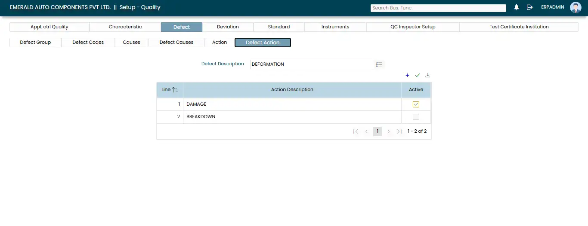

<div data-category="Quality control Management" data-title="Defect Action" data-updated="December 01, 2025" data-contributors="RoadmapIT" data-breadcrumb="Home,Quality control Management,Defect Action">
  <div class="page-content">
    <p>Actions taken against the defect are mapped in this screen.</p>

    <h5>Navigation Path:</h5>
    <p class="fs-6">Quality Control \ Setup \ Setup – Quality</p>
    
    <!-- Add Defect Action -->
    <h2>Add Defect Action:</h2>
    <ul style="list-style-type: none; align-content: center">
      <li class="mouse-icon">Choose the Defect LOV.</li>
      <li class="mouse-icon">Click the add icon to create.</li>
      <li class="mouse-icon">Map the action to the defect codes by selecting the Action from the LOV.</li>
      <li class="mouse-icon">
        Click
        <i class="bi bi-check-lg fs-4 mx-1 text-success"></i>
        to save.
      </li>
    </ul>

    <!-- Modify Defect Action -->
    <h2>Modify Defect Action:</h2>
    <ul style="list-style-type: none; align-content: center">
      <li class="mouse-icon">Only descriptions can be modified.</li>
      <li class="mouse-icon">Click on the Defect Action.</li>
      <li class="mouse-icon">Change the Description.</li>
      <li class="mouse-icon">
        Click
        <i class="bi bi-check-lg fs-4 mx-1 text-success"></i>
        to save.
      </li>
    </ul>

    <!-- Disable Defect Action -->
    <h2>Disable Defect Action:</h2>
    <ul style="list-style-type: none; align-content: center">
      <li class="mouse-icon">Only unused profile actions can be disabled.</li>
      <li class="mouse-icon">Select the Defect Action.</li>
      <li class="mouse-icon">Disable the Active flag.</li>
    </ul>
  </div>
</div>